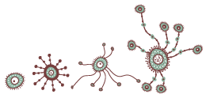

Aaron N. Brooks / PhD
-

A system-level model for the microbial regulatory genome
A condition-dependent wiring diagram of the cell
-
Evolution of Context Dependent Regulation by Expansion of Feast/Famine Regulatory Proteins
Rewired microbial regulatory networks facilitate environmental adaptation
-
Data-driven integration of genome-scale regulatory and metabolic network models
State-of-the-art tools to model microorganisms
-
 Adaptation of cells to new environments
Even microbes have to keep up with the Joneses
-

Macromolecular networks and intelligence in microorganisms
Can studying microbes shed light on how our brains work?
-
Going viral: How living networks go awry
How do biological networks work?
-
A system-level model for the microbial regulatory genome
AN Brooks*, DJ Reiss*, A Allard, W Wu, DM Salvanha, CL Plaisier, S Chandrasekaran, M Pan, A Kaur, NS Baliga
Two genome-scale gene regulatory network models inferred directly from transcriptome measurements...[More]
-
Evolution of Context Dependent Regulation by Expansion of Feast/Famine Regulatory Proteins
CL Plaisier, FY Lo, J Ashworth, AN Brooks, KD Beer, A Kaur, M Pan, DJ Reiss, FT Facciotti, NS Baliga.
Differences in the genome-wide binding locations and context-specific expression of an expanded family of Lrp-like regulatory proteins facilitates niche-adaptation in a halophilic archaeon...[More]
-
Data-driven integration of genome-scale regulatory and metabolic network models
S Imam, S Schäuble, AN Brooks, NS Baliga, N Price
In this perspective, we review current approaches for constructing integrated regulatory-metabolic models and outline new strategies for future development of these network models for any microbial system...[More]
-
Adaptation of cells to new environments
AN Brooks, S Turkarslan, KD Beer, FY Lo, NS Baliga
How do single-celled organisms keep pace with environments that constantly change?...[More]
-
Macromolecular networks and intelligence in microorganisms
H Westerhoff*, AN Brooks*, E Simeonidis*, R García-Contreras*, F Boogerd, F He, VJ Jackson, V Goncharuk, A Kolodkin
Are microbes intelligent? Can investigating microbial intelligence help us better understand the human brain?...[More]
-
Going viral: How living networks go awry
AN Brooks, C Lausted, and M Shelton
Interactive network exhibit for scientific outreach at the USA Science and Engineering Festival in Washington DC...[More]